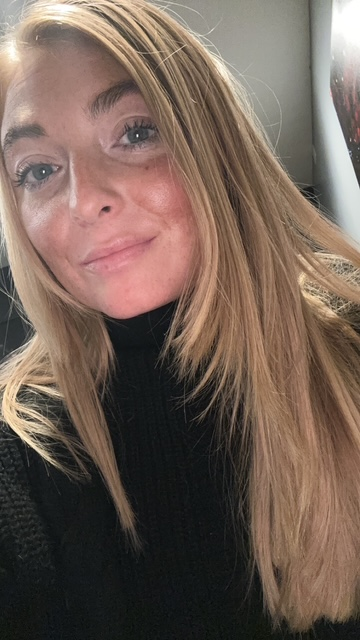

Hi, I'm Jori!
Welcome to my About Me page! I'm passionate about communications, marketing, creativity, and connecting with people.
Meet Jori!

My Professional Background
I earned my bachelor's degree from Metropolitan State University of Denver and have professional experience in higher education recruitment, marketing, and communications.
At the University of Northern Colorado, I work as a recruiter and marketer, connecting with prospective students, developing outreach strategies, and promoting academic programs.
Through my work, I've developed skills in social media management, digital storytelling, content creation, event planning, and relationship building.
I enjoy collaborating with others, developing creative ideas, and finding new ways to engage audiences.
My Portfolio Mission
The purpose of this portfolio is to showcase my professional experience, creative projects, and continued growth in communications and marketing.
This website is designed for potential employers, professional collaborators, and anyone interested in learning more about my skills and work.
Beyond the Workplace
Outside of work, I enjoy staying active, playing sports, exploring new places, and planning creative events.
I love bringing people together and creating experiences that make lasting memories.